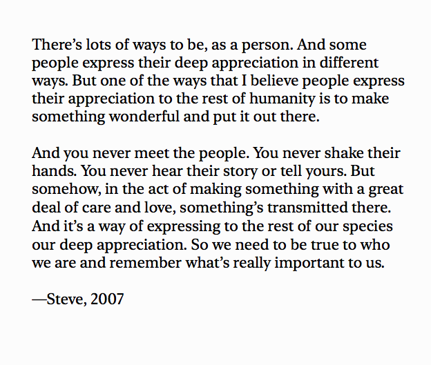

Quotes
Last updated April 20, 2025
-
Perhaps only a malignant end can follow the systematic belief that all communities are one community; that all truth is one truth; that all experience is compatible with all other; that total knowledge is possible. Science is not all of the life of reason; it is a part of it . . . The study of physics, and I think my colleagues in the other sciences will let me speak for them, too, does not make philosopher-kings. It has not, until now, made kings. It almost never makes fit philosophers.
J. Robert Oppenheimer.-
Life is not an illogicality; yet it is a trap for logicians. It looks just a little more mathematical and regular than it is; its exactitude is obvious, but its inexactitude is hidden; its wildness lies in wait.
G.K. Chesterton.-
The thing I would say is, when you grow up, you tend to get told that the world is the way it is, and your life is just to live your life inside the world, try not to bash into the walls too much, try to have a nice family life, have fun, save a little money — but that’s a very limited life. Life can be much broader, once you discover one simple fact. And that’s that everything around you that you call life was made up by people that were no smarter than you. And you can change it, you can influence it, you can build your own things that other people can use, and the minute you understand that you can poke life — if you push in, something will pop out the other side — you can change it, you can mold it. That’s maybe the most important thing. It’s to shake off this erroneous notion that life is ‘there’, and you’re just going to live in it … versus embrace it, change it, improve it, make your mark upon it. I think that’s very important. And however you learn that, once you learn it, you’ll want to change life and make it better, because it’s kind of messed up in a lot of ways. Once you learn that, you’ll never be the same again.
Steve Jobs.-
Before I set out to travel this world, 12 years ago, I used to believe that the human race as a whole was basically a few steps above wolves. That given the slightest change in circumstances, we would all, sooner or later, tear each other to shreds. That we were, at root, self-interested, cowardly, envious and potentially dangerous in groups. I have since come to believe – after many meals with many different people in many, many different places – that though there is no shortage of people who would do us harm, we are essentially good.
That the world is, in fact, filled with mostly good and decent people who are simply doing the best they can. Everybody, it turns out, is proud of their food (when they have it). They enjoy sharing it with others (if they can). They love their children. They like a good joke. Sitting at the table has allowed me a privileged perspective and access that others, looking principally for “the story,” do not, I believe, always get.
People feel free, with a goofy American guy who has expressed interest only in their food and what they do for fun, to tell stories about themselves – to let their guard down, to be and to reveal, on occasion, their truest selves.
I am not a journalist. I am not a foreign correspondent. I am, at best, an essayist and enthusiast. An amateur. I hope to show you what people are like at the table, at home, in their businesses, at play. And when and if, later, you read about or see the places I’ve been on the news, you’ll have a better idea of who, exactly, lives there.
“Parts Unknown” is supposed to be about food, culture and travel – as seen through the prism of food. We will learn along with you. When we look at familiar locations, we hope to look at them from a lesser-known perspective, examine aspects unfamiliar to most.
People, wherever they live, are not statistics. They are not abstractions. Bad things happen to good people all the time. When they do, hopefully, you’ll have a better idea who, and what, on a human scale, is involved.
I’m not saying that sitting down with people and sharing a plate is the answer to world peace. Not by a long shot. But it can’t hurt.
Anthony Bourdain.-
To be uncertain is to be uncomfortable, but to be certain is to be ridiculous.-
All evils are caused by insufficient knowledge.
David Deutsch.-
People always say you should live every day as though it’s your last. I sort of have taken the opposite tack, where I think you should live every day as though it’s going to go on forever. You should treat people like you’re going to see them again in the future. You should start working on projects that may take a long time. And so I want to live every day as though it’s going to go on forever.
Peter Thiel.-
Scientific progress is a cumulative process of uncertainty reduction that can only succeed if science itself remains the greatest skeptic of its explanatory claims.
‘Estimating the reproducibility of advanced science’ – Open Science Collaboration.-
One final paragraph of advice: do not burn yourselves out. Be as I am – a reluctant enthusiast… a part-time crusader, a half-hearted fanatic. Save the other half of yourselves and your lives for pleasure and adventure. It is not enough to fight for the land; it is even more important to enjoy it. While you can. While it’s still here. So get out there and hunt and fish and mess around with your friends, ramble out yonder and explore the forests, climb the mountains, bag the peaks, run the rivers, breathe deep of that yet sweet and lucid air, sit quietly for a while and contemplate the precious stillness, the lovely, mysterious, and awesome space. Enjoy yourselves, keep your brain in your head and your head firmly attached to the body, the body active and alive, and I promise you this much; I promise you this one sweet victory over our enemies, over those desk-bound men and women with their hearts in a safe deposit box, and their eyes hypnotized by desk calculators. I promise you this; You will outlive the bastards.
Edward Abbey.-
If you do everything, you will win.
Lyndon B. Johnson-
Speak the truth, but leave immediately after.
Slovenian Proverb. (H/T Cliff Asness.)-
Forget about acting. Whatever you do as an actor is cumulative. Go to art galleries, listen to music, know what’s happening on the news, in the world, and form your opinions, develop your taste and judgement. So that when a quality piece of writing is put in front of you, your imagination, which you’ve nurtured, has something to bounce off of.
Alan Rickman.-
The world is a very malleable place. If you know what you want, and you go for it with maximum energy and drive and passion, the world will often reconfigure itself around you much more quickly and easily than you would think.
Marc Andreessen.-
Economic growth is not a cure-all, but lack of growth is a kill-all.
Paul Collier.-
We have a duty to be optimistic. Because the future is open, not predetermined and therefore cannot just be accepted: we are all responsible for what it holds. Thus it is our duty to fight for a better world.
David Deutsch.-
There are two kinds of people: Those who think they can, and those who think they cannot, and they’re both right.
Henry Ford.-
I have had all these incredible offers to do a $1 billion fund, $2 billion fund on the outside. ‘And there’d be a 5-6% load — we’ll give you half,’ they promised, ‘And it’ll be closed-end, so no matter how badly it does, you will always be getting a management fee.’ The Lynch Fund — I’d have my name on it. But I know what I would do: I would work 90 hours a week. All I would get would be a bunch of money. I have no interest in that.
It’s like — one hot fudge sundae is great, two are okay and five just makes you sick. I love this job. I love my family. I love outside activities. There’s just too much of it.
Peter Lynch.-
Of all tyrannies, a tyranny sincerely exercised for the good of its victims may be the most oppressive. It would be better to live under robber barons than under omnipotent moral busybodies. The robber baron’s cruelty may sometimes sleep, his cupidity may at some point be satiated; but those who torment us for our own good will torment us without end for they do so with the approval of their own conscience.
C.S. Lewis.-
As you become an adult, you realize that things around you weren’t just always there; people made them happen. But only recently have I started to internalize how much tenacity everything requires. That hotel, that park, that railway. The world is a museum of passion projects.
John Collison.-
The reasonable man adapts himself to the world; the unreasonable man persists on trying to adapt the world to himself. Therefore, all progress depends on the unreasonable man.
George Bernard Shaw.-
Here’s to the crazy ones. The misfits. The rebels. The troublemakers. The round pegs in the square holes. The ones who see things differently. They’re not fond of rules. And they have no respect for the status quo. You can quote them, disagree with them, glorify or vilify them. About the only thing you can’t do is ignore them. Because they change things. They push the human race forward. And while some may see them as the crazy ones, we see genius. Because the people who are crazy enough to think they can change the world, are the ones who do.
Steve Jobs.-
I am a great believer in luck, and I find the harder I work, the more I have of it.
Thomas Jefferson.-